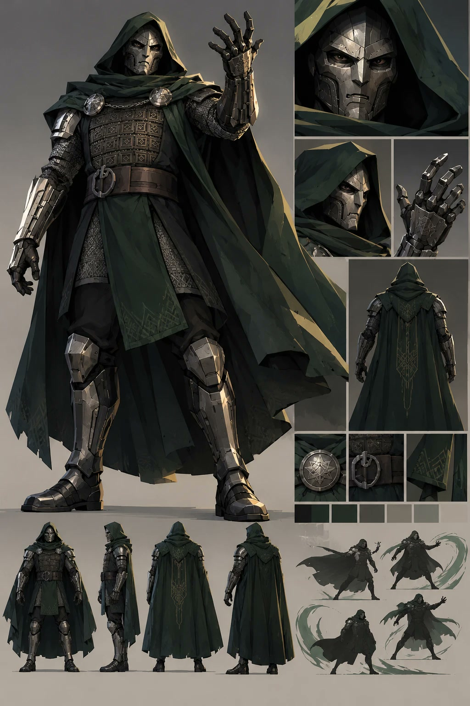
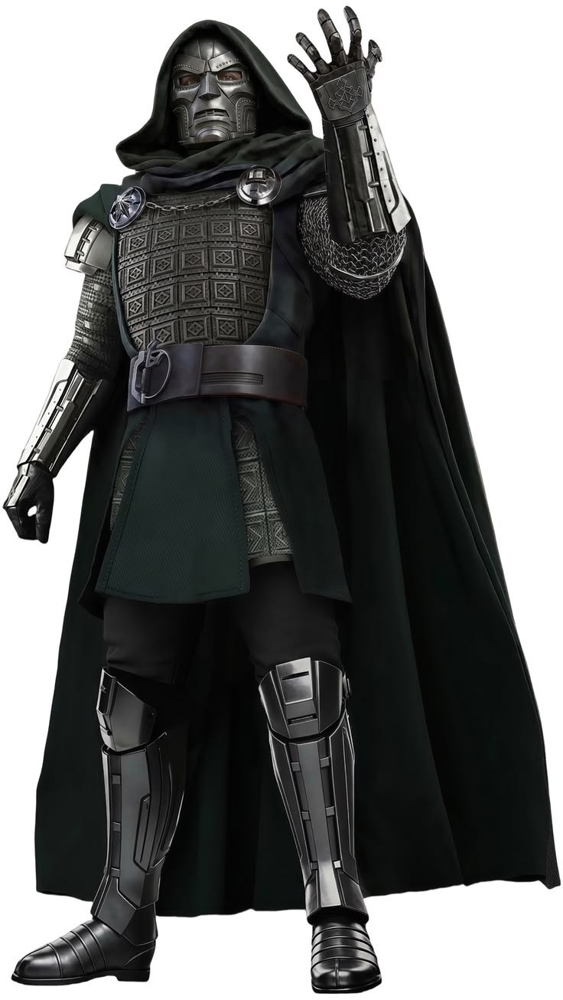
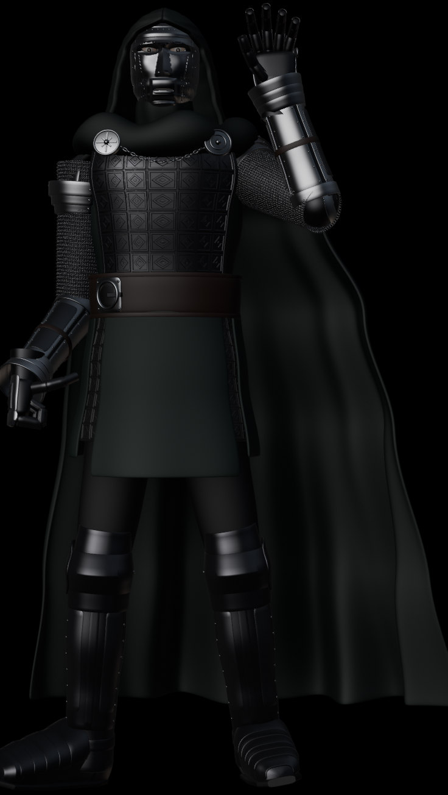
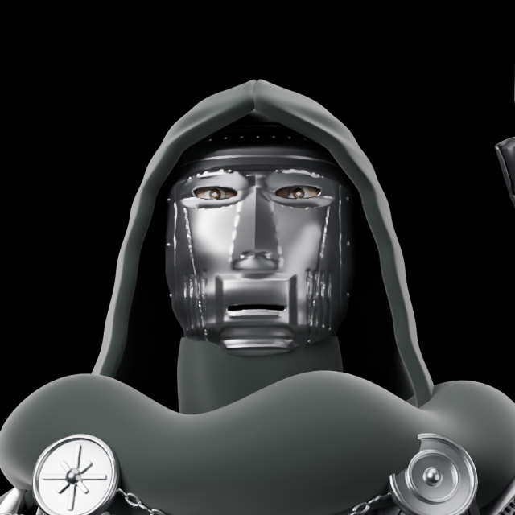
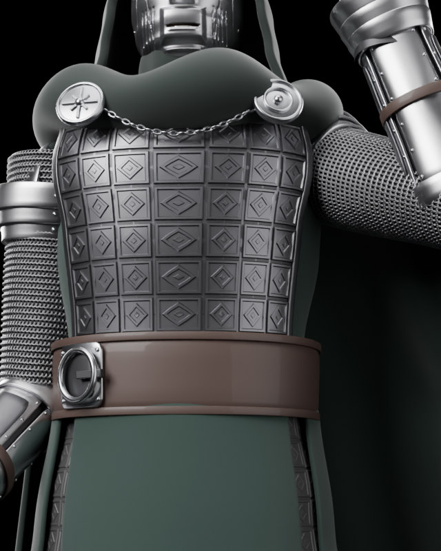

Hayran filmi · 3B karakter
Doom: Taht Salonu
Gotik bir taht salonunda, yeşil alevler ve altın ışık huzmeleri arasında geçen sinemaskop oranlı bir sahne. Karakteri önce yapay zekâ ile çok açılı bir tasarım sayfasında geliştirdim, ardından konsept görselden yola çıkarak Blender’da 3B olarak kurdum: zırh parçaları, kumaş pelerin ve 53 kemikli iskelet.
- Film
- 30 sn · 2.35:1
- 3B
- Blender · Cycles
- Materyal
- 15 PBR materyal
- Yıl
- 2026




